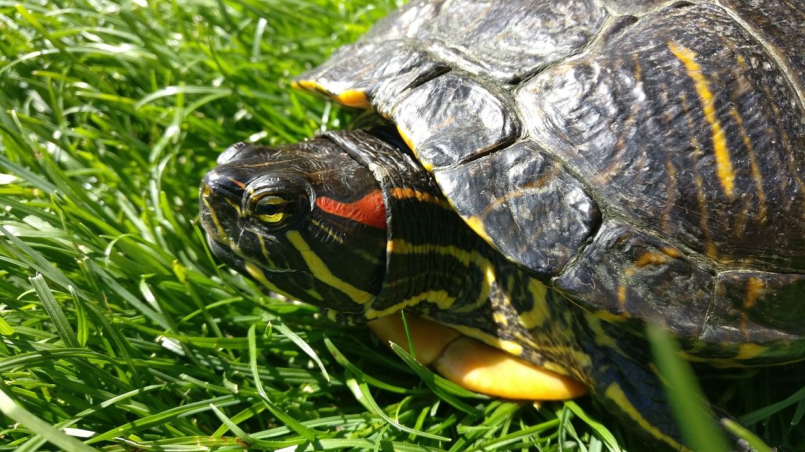
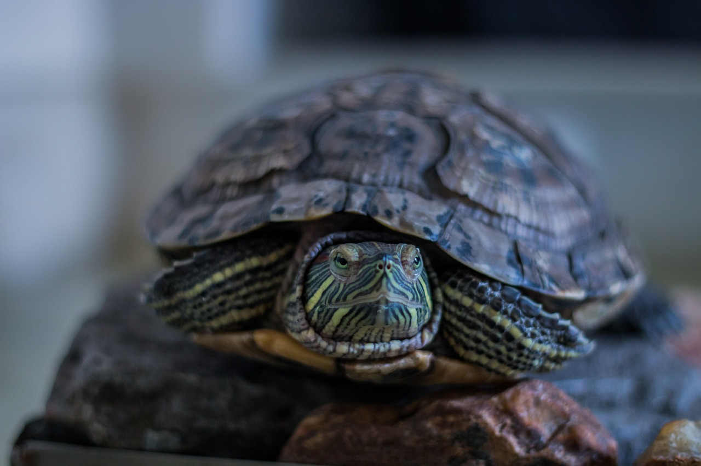
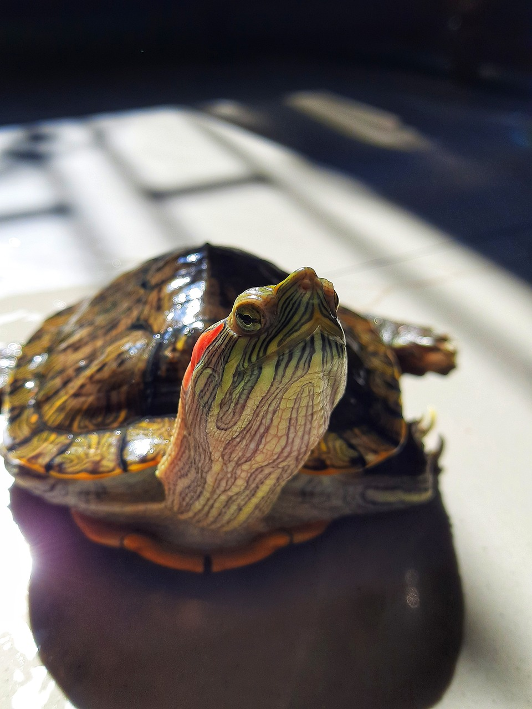

El Trachemys scripta elegans, comúnmente conocido como la tortuga de orejas rojas, es una especie de tortuga semiacuática que destaca por su llamativa apariencia y su comportamiento fascinante. Originaria de América del Norte, esta especie ha ganado popularidad como mascota debido a su coloración vibrante y su naturaleza activa. Su caparazón presenta tonos verdes y marrones, mientras que su cabeza está adornada con rayas rojas distintivas detrás de los ojos, de ahí su nombre característico. Son excelentes nadadoras y pueden pasar largos períodos tanto en el agua como en tierra firme. Además, su dieta omnívora les permite alimentarse de una variedad de alimentos, desde plantas acuáticas hasta pequeños peces e insectos. A pesar de su aspecto encantador, requieren cuidados específicos en cautiverio para asegurar su bienestar y salud a lo largo de su vida, lo que incluye proporcionarles un entorno adecuado con acceso tanto a agua como a tierra, así como una dieta equilibrada y atención veterinaria regular.

La Tortuga de orejas rojas como mascota
Medidas para un acuario
Volumen del acuario: Las tortugas de orejas rojas necesitan espacio para nadar, explorar y crecer. Un acuario grande proporciona un ambiente más natural y reduce el estrés en la tortuga. Un acuario de al menos 75-100 galones ofrece suficiente espacio para una tortuga solitaria, con espacio adicional para decoraciones y áreas de descanso.
Calidad del agua: : La calidad del agua es fundamental para la salud de la tortuga. Un sistema de filtración eficaz es necesario para eliminar los desechos y mantener los niveles adecuados de amoníaco, nitritos y nitratos. Los cambios parciales de agua regularmente ayudan a mantener el agua limpia y saludable.
Temperatura del agua: Las tortugas de orejas rojas son ectotermas, lo que significa que dependen de la temperatura del entorno para regular su temperatura corporal. Mantener el agua entre 75-80°F (24-27°C) proporciona un ambiente cómodo para la tortuga y ayuda a estimular su metabolismo.

La Tortuga de orejas rojas como mascota
Medidas para un acuario
Refugios y áreas de descanso: Las tortugas disfrutan explorando y escondiéndose en su entorno. Agrega rocas, troncos flotantes, cuevas o plantas acuáticas para crear áreas donde la tortuga pueda descansar, esconderse y explorar su entorno de manera segura.
Punto seco: Aunque estas tortugas pasan la mayor parte del tiempo en el agua, también necesitan un área seca donde puedan salir para descansar y secarse completamente. Proporciona una plataforma flotante, una rampa o un área elevada con acceso fácil dentro y fuera del agua.
Iluminacion : La luz adecuada es esencial para el bienestar de la tortuga. La luz UVB es necesaria para la síntesis de la vitamina D3, que a su vez ayuda a metabolizar el calcio para mantener huesos y caparazón saludables. Proporciona una fuente de luz UVB adecuada y asegúrate de que la tortuga tenga acceso a ella durante varias horas al día.

La Tortuga de orejas rojas como mascota
Medidas para un acuario
Alimentación: Las tortugas de orejas rojas son omnívoras y necesitan una dieta equilibrada para mantenerse saludables. Ofrece alimentos comerciales específicos para tortugas acuáticas, así como vegetales frescos como lechuga, zanahorias y calabacines. También puedes proporcionar proteínas animales ocasionalmente, como camarones, gusanos de sangre o pescado.
Termoregulacion:Es importante que la tortuga tenga acceso a diferentes temperaturas dentro del acuario para que pueda regular su temperatura corporal según sea necesario. Coloca una luz calefactora sobre el área seca para proporcionar un punto caliente, mientras que otras áreas del acuario pueden permanecer más frescas.
Monitorizacion constante:Observa regularmente el comportamiento de la tortuga y la calidad del agua. Controla la temperatura del agua, los niveles de pH y los niveles de amoníaco para asegurarte de que estén dentro de los rangos adecuados. Realiza ajustes según sea necesario para garantizar el bienestar continuo de la tortuga.
Datos de improtancia
Otros datos de importancia de la especie
Longevidad
Las tortugas de orejas rojas, científicamente conocidas como Trachemys scripta elegans, son conocidas por tener una vida relativamente larga. En su hábitat natural, que incluye áreas de agua dulce como lagos, estanques y ríos de América del Norte, estas tortugas pueden vivir entre 20 y 30 años. Sin embargo, bajo cuidados adecuados en cautiverio, pueden superar fácilmente los 40 años y algunas han llegado incluso a vivir más de 50 años. Esta longevidad las convierte en mascotas que pueden acompañar a una persona durante una gran parte de su vida.
Reproduccion
Las tortugas de orejas rojas alcanzan la madurez sexual entre los 2 y 5 años de edad, momento en el que comienzan a buscar compañeros para reproducirse. Durante la temporada de reproducción, que generalmente ocurre en primavera y verano, los machos buscan activamente a las hembras, a menudo mostrando comportamientos como la natación constante alrededor de ellas o el intento de montaje. Una vez que se produce el apareamiento, las hembras buscarán un lugar adecuado para poner sus huevos.
Frecuencia de reproduccion
La frecuencia de reproducción de las tortugas de orejas rojas puede variar según diferentes factores. En la naturaleza, las tortugas pueden reproducirse anualmente o cada dos años, dependiendo de la disponibilidad de recursos, la salud de la población y otros factores ambientales. En cautiverio, donde las condiciones pueden ser más estables y controladas, es más común que se reproduzcan anualmente si las condiciones son adecuadas.
Huevos y crias
Después del apareamiento, las hembras buscarán un lugar adecuado para enterrar sus huevos. Pueden poner entre 10 y 30 huevos por puesta, aunque este número puede variar. Los huevos son enterrados en un nido excavado por la hembra en tierra húmeda cerca del agua. Los huevos tardan entre 60 y 90 días en eclosionar, dependiendo de la temperatura ambiente. Una vez que las crías emergen de los huevos, son independientes y deben cuidarse por sí mismas, aunque en algunos casos pueden enfrentar riesgos como la depredación.
Estado en la naturaleza
Las tortugas de orejas rojas son una especie de tortuga acuática nativa de América del Norte y son comunes en una variedad de hábitats acuáticos. Sin embargo, su estado de conservación se ve amenazado por diversas actividades humanas, como la pérdida de hábitat debido al desarrollo urbano y agrícola, la contaminación del agua y la introducción de especies exóticas. Además, el comercio de mascotas ha llevado a la captura excesiva de estas tortugas, lo que ha afectado a algunas poblaciones. Aunque todavía son comunes en muchas áreas, se considera importante monitorear y proteger sus poblaciones para garantizar su supervivencia a largo plazo.
Anatomia
Caparazon
Es el armazón duro y protector que cubre su cuerpo. En la tortuga de orejas rojas, el caparazón suele ser de forma ovalada y está compuesto por huesos fusionados cubiertos por una capa de queratina. Este caparazón es esencial para proteger sus órganos vitales.
Plastrón
Es la parte inferior del caparazón y también está compuesto por huesos fusionados cubiertos de queratina. En la tortuga de orejas rojas, el plastrón es más plano que en algunas otras especies de tortugas acuáticas.
Piel
La piel de la tortuga de orejas rojas es lisa y está cubierta de escamas. Puede variar en color, desde un verde oliva hasta un marrón oscuro.
Cabeza
La cabeza es proporcionalmente grande en comparación con su cuerpo y presenta una forma alargada. En la parte superior de la cabeza, justo detrás de los ojos, se encuentran las características manchas rojas que le dan su nombre común.
Patas y garras
Tienen cuatro patas, cada una con garras afiladas que les ayudan a agarrarse a superficies resbaladizas y a desplazarse tanto en tierra como en agua.
Orejas
Aunque no son visibles externamente, tienen un sentido del oído bien desarrollado y son capaces de percibir vibraciones en el agua y en el aire.